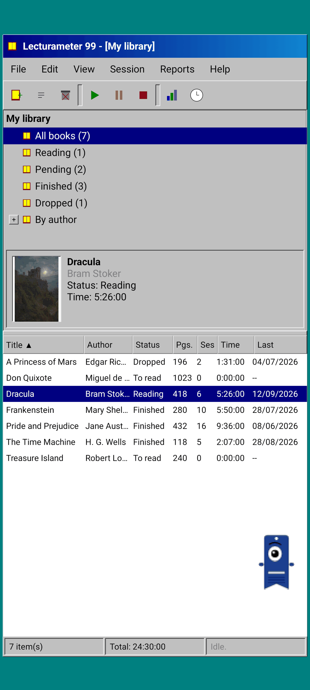
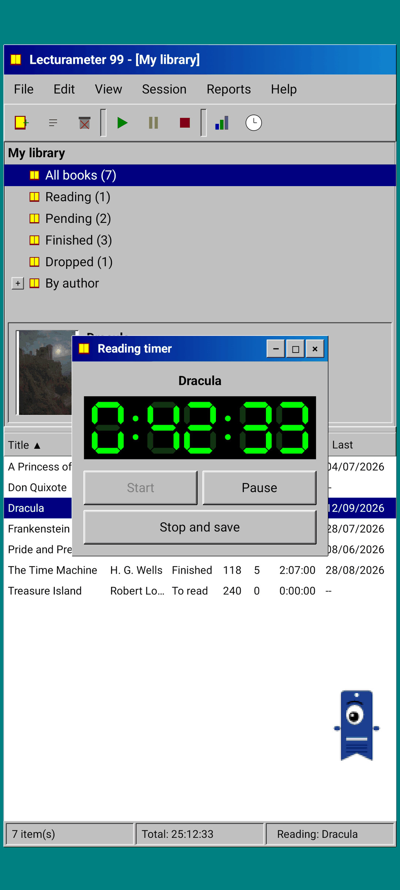
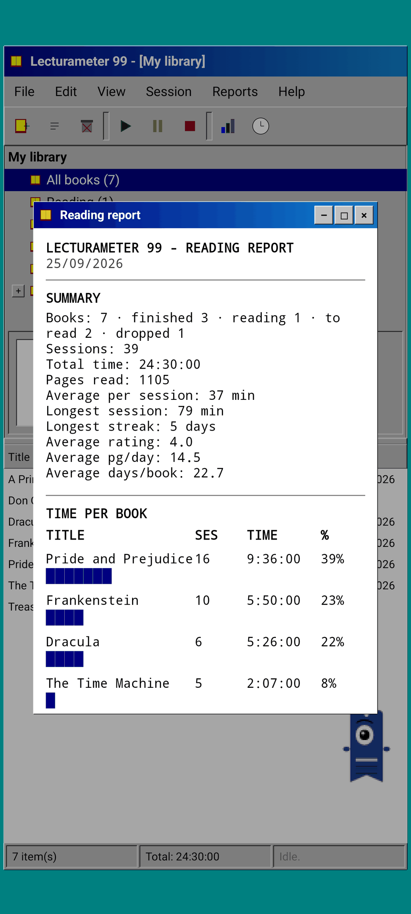
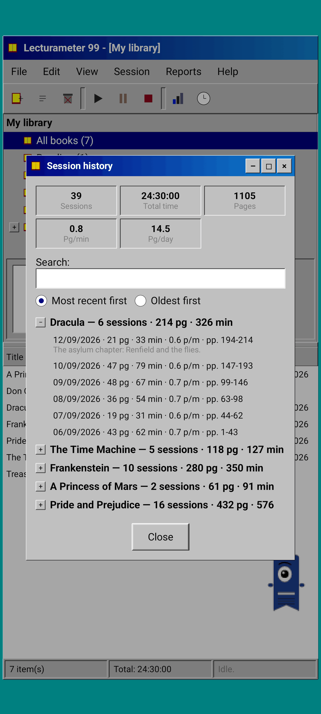
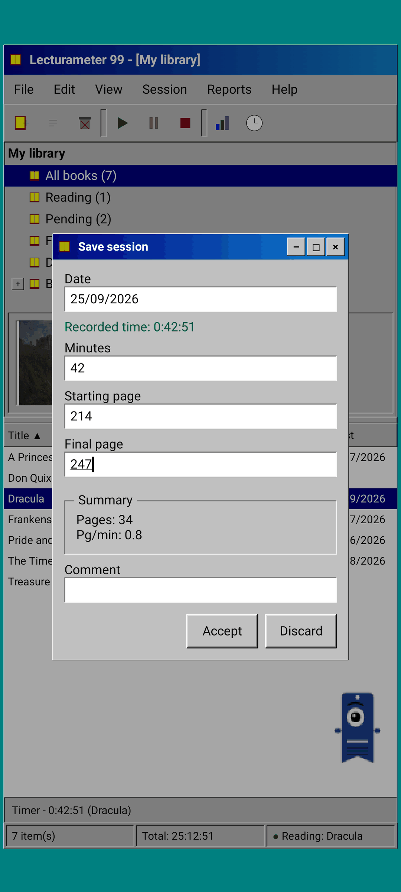
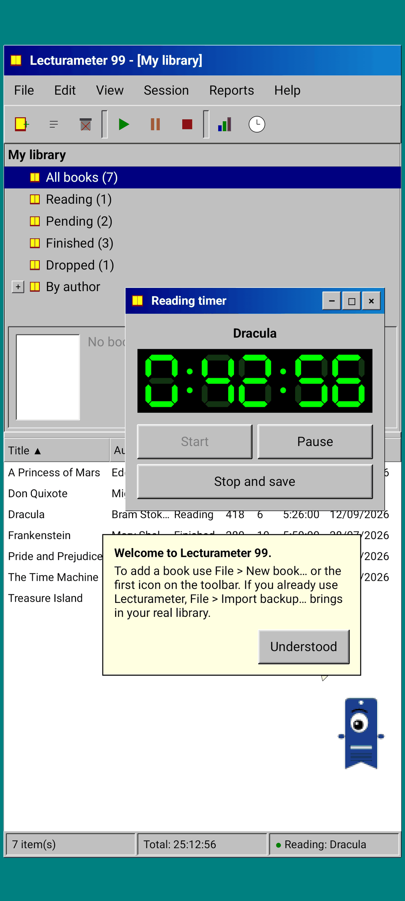

Lecturameter 1999
Lecturameter as if you had installed it from a CD-ROM in 1999. An alternative client for the app, with windows, menus and tables, that opens your real backups.

What it is
A late-nineties desktop program running on your phone. One window over a teal desktop, a menu bar, a toolbar, a folder tree, a dense table and a status bar.
- Library tree: all books, reading, pending, finished, dropped and by author
- Table with title, author, status, pages, sessions, time and last read. Tap a column header to sort
- Real book search, using the same catalog Lecturameter uses
- Imports and exports the Lecturameter backup and the Goodreads CSV. Your data goes in and out without losing anything

Why it exists
An experiment: rebuild the idea of Lecturameter from scratch under radically different design premises, without touching the real app. Of all the reinterpretations, the 1999 one was the one I liked most, so I finished it as a fun exercise and turned it into a complete client. It is simpler than Lecturameter on purpose: it is an experiment and, in principle, it will not get any further development.
- Timer in a floating window with a green LCD display. It moves, minimizes to a taskbar and keeps counting in the status bar
- When you stop, the save session dialog asks for your pages and works out your pace, just like Lecturameter
- Saved sessions are Lecturameter sessions: they come back to the modern app if you export a Lecturameter 1999 backup and import it in Lecturameter.

Reading report
Statistics are a printed report: summary, time per book with block bars, speed in pages per day, a calendar of the year drawn in characters and the last seven days.

Session history
Sessions grouped by book in a tree with plus and minus, with five figures at the top: sessions, total time, pages, pages per minute and pages per day.

Save session
Date, minutes, first and last page, comment. The summary works out pages and pace as you type. If you reach the last page, it asks whether you finished the book.

Pagi 99
Pagi travels to 1999 too: pixelated and loose on the screen like the office assistants of the time. You can drag it, it says a line when you tap it and it shows tips in yellow balloons.
What changes compared to Lecturameter
Same as Lecturameter
- Same data: books, sessions, statuses, ratings and notes. The backup file is the same in both apps.
- Book search by title or author.
- Real timer: it keeps counting in the background and even if you close the app.
- No account, no ads, no connection except to search for books.
- The same languages as Lecturameter.
Only in the 1999 edition
- A 1999 desktop interface. No Material.
- Real windows: you drag them, minimize them and close them with the cross.
- Reading report in text, with a calendar drawn in characters.
- Context menu on long press and keyboard shortcuts if you connect a keyboard.
- Pixelated Pagi 99 with tip balloons.
What it leaves out, on purpose
- No Pro. Everything in it is included.
- No challenges, bingos, yearly wrapped or widgets.
- No themes: grey, navy and LCD green.
- No immersive session, ambient sounds or Google Drive backup. The backup is saved as a file.
Coming free to Play Store and App Store, after Lecturameter for iOS and version 3.7. Read the blog post to see where it comes from and what to expect.